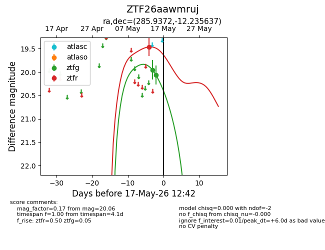
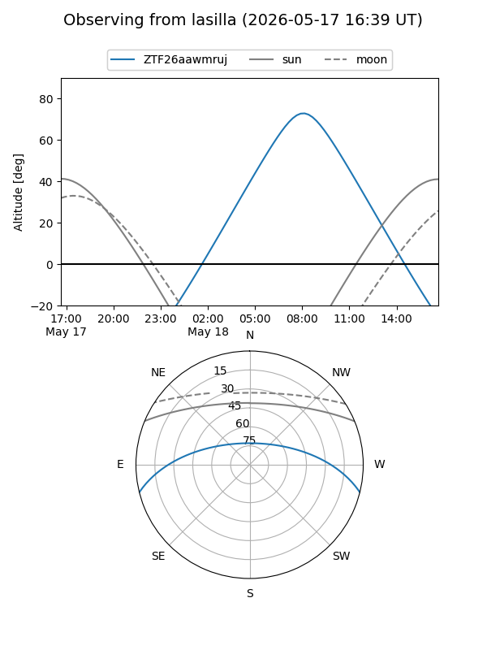
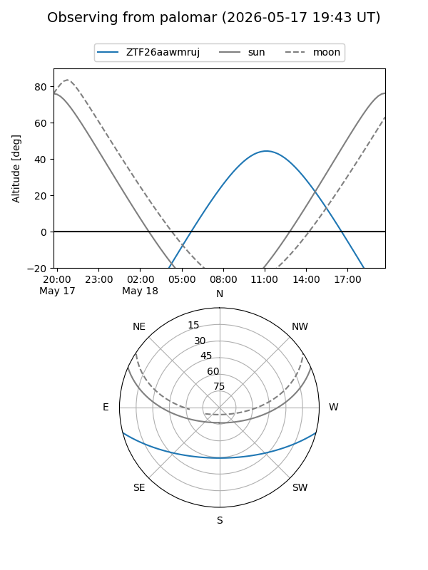
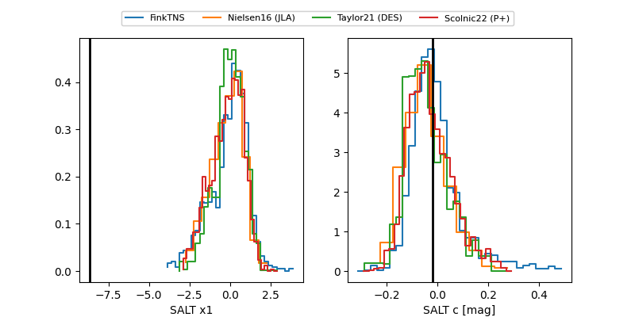

ZTF26aawmruj
Target ZTF26aawmruj at 2026-05-17 12:44
Aliases and brokers:
FINK: link
Lasair: link
ALeRCE: link
alt names
ZTF26aawmruj (ztf,fink_ztf)
Coordinates:
equatorial (ra, dec) = 285.9372,-12.23564
equatorial (HMS+DMS) = 19:03:44.92,-12:14:08.29
galactic (l, b) = (23.3528,-8.24092)
Flags:
Photometry:
last ztfg=20.06, ztfr=19.46
2 ztfg, 1 ztfr detections
Lightcurve

Visibility


Additional plots
